Staff Members
The technical, administrative and support team that keeps the lab running.
The team that runs the lab
Lab administration and procurement, development of new hardware platforms and experiments, planning and execution of lab courses, outreach programs, systems and network, and day-to-day operations. Hover over a card — or tap it — to read what each person does.
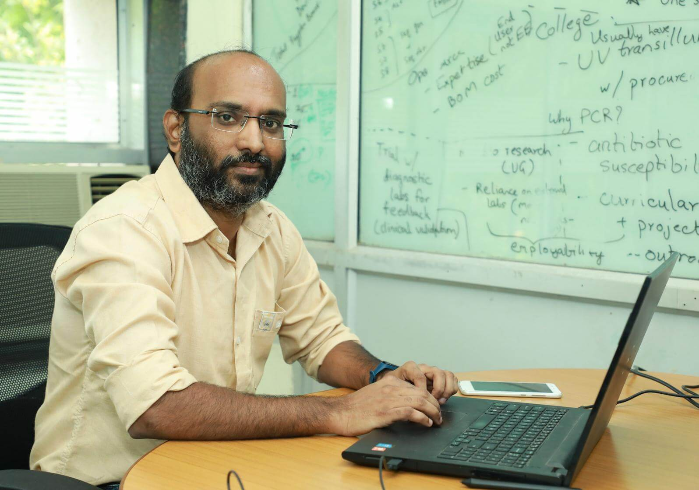
Mahesh Ashok Bhaganagare
Technical OfficerMahesh Ashok Bhaganagare
Technical Officer TechnicalMahesh is the Senior Technical Superintendent at WEL. He is responsible for overall lab administration and procurement, development of new hardware platforms and experiments, resources and infrastructure planning and execution of lab courses, planning and execution of outreach programs, assistance in project development activities, guidance to research and teaching assistants, and assistance in infrastructure planning and setting up of new teaching and research labs and classrooms in the department. Mahesh is an IIT Bombay alumnus, having graduated with an M.Tech (Electronic Systems) from IIT Bombay.
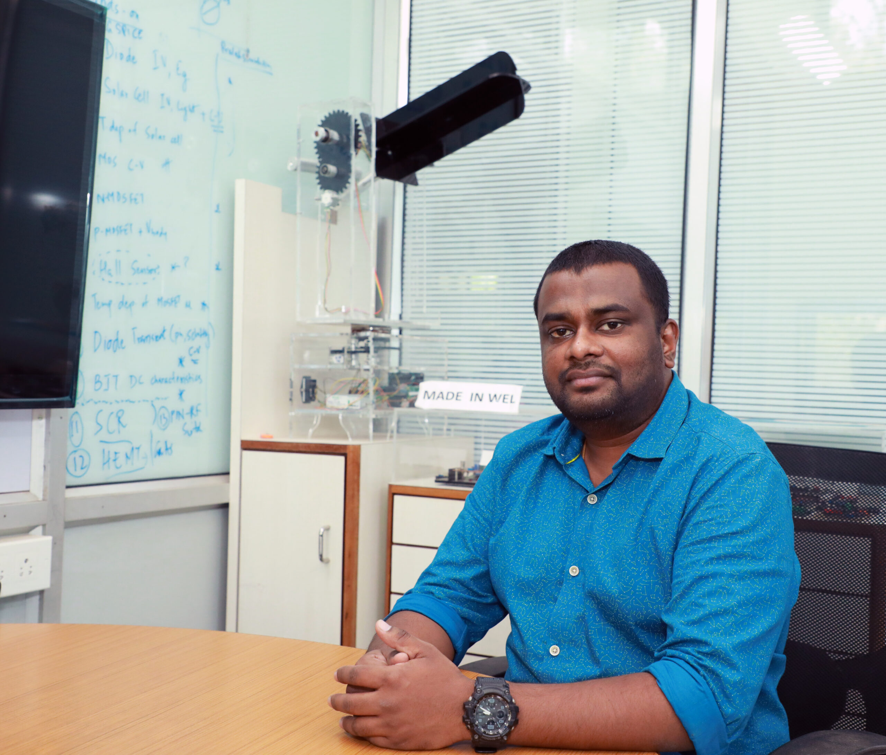
Maheshwar Mangat
Sr. Technical SuperintendentMaheshwar Mangat
Sr. Technical Superintendent TechnicalMaheshwar is Technical Superintendent at WEL, where he oversees the overall administration, development of new experiments and resource/infrastructure management of UG lab courses, development of portable lab kits, assistance in project development activities, and conducting workshops. Maheshwar holds a B.Tech (E&TC) from Dr. Babasaheb Ambedkar Technological University and a PG Diploma in Embedded Systems and Industrial Automation. His main interest lies in PCB design, embedded systems design, programming, and industrial IoT.
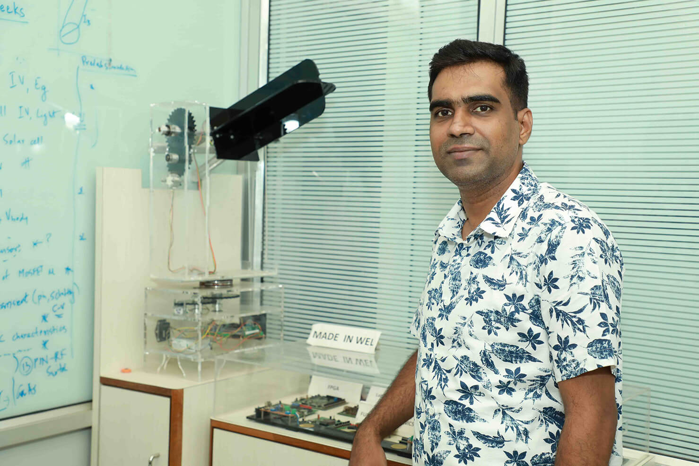
Amit Shetye
Sr. Technical SuperintendentAmit Shetye
Sr. Technical Superintendent TechnicalAmit is Technical Superintendent at WEL. He oversees all administration of lab courses. Additionally, he is involved in activities in the following domains: embedded systems, hardware description languages, PCB designing, and hardware testing and repairing. He is an IIT Bombay alumnus, having graduated with an M.Tech in Electronic Systems at IIT Bombay after acquiring a Bachelor of Engineering in E&TC from Mumbai University.
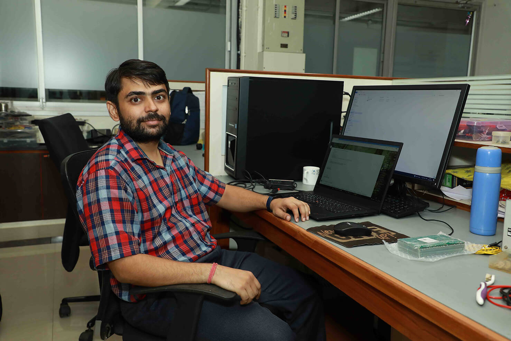
Ankur Agarwal
Jr. Technical SuperintendentAnkur Agarwal
Jr. Technical Superintendent TechnicalAnkur is Technical Superintendent at WEL. He is involved in electronic product design, embedded system design, PCB design and assembly, 3D modelling, and fabrication. He has completed his M.Des. in Electronic Systems from the Indian Institute of Information Technology Design and Manufacturing, Kancheepuram. He is working on two research projects, codenamed PicoIRIS and iPEC.
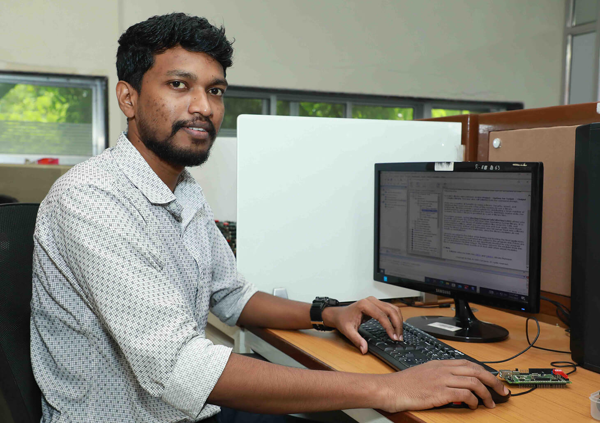
Yadnyik Pandurang Sonalkar
Technical SuperintendentYadnyik Pandurang Sonalkar
Technical Superintendent TechnicalYadnyik is a Technical Superintendent. He is involved in embedded software development and PCB fabrication.
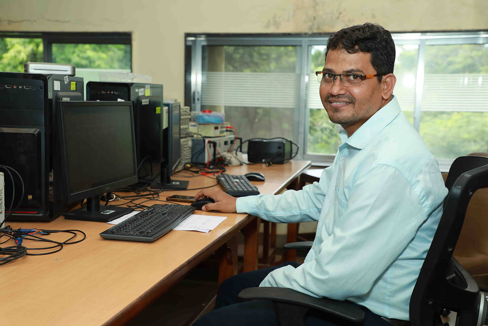
Sadanand Sahadev Sawant
Sr. Mechanic (Electronics)Sadanand Sahadev Sawant
Sr. Mechanic (Electronics) ResearchSadanand handles day-to-day teaching lab activities of UG and PG students. His expertise is in soldering, testing, and repair and maintenance of measurement equipment, development boards, and modules. He has received a Diploma in Electronics from the Maharashtra State Board of Technical Education, Mumbai.

Suraj Suresh Sarfare
Jr. MechanicSuraj Suresh Sarfare
Jr. Mechanic ResearchSuraj oversees the handling of the UG and PG teaching labs, operating and fault finding and repair and maintenance of electronic measuring instruments and development boards, maintaining the lab records, and keeping track of the lab equipment and boards. He has received a Diploma in Electronics from the Maharashtra State Board of Technical Education, Mumbai.
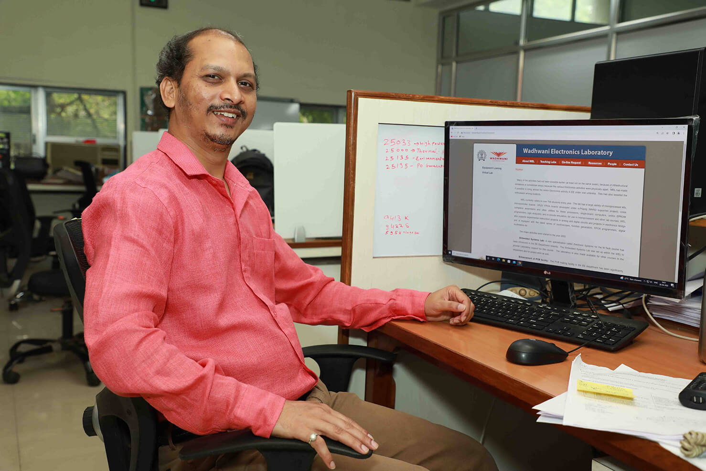
Nilesh Tukaram Sawant
Sr. Technical Superintendent (Sysad)Nilesh Tukaram Sawant
Sr. Technical Superintendent (Sysad) SystemsNilesh is Technical Superintendent. He oversees all the system administration work at WEL. He is responsible for development of Linux drivers for WEL lab boards and development of barcode-based online verification of WEL lab electronics equipment stock. Nilesh has a Master's degree in Computer Application.
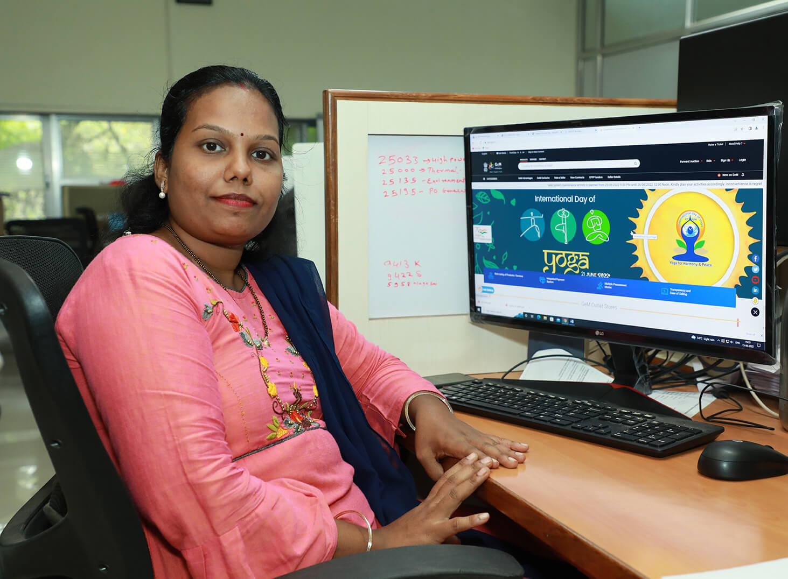
Varsha Suresh Ingle
Sr. Project AssistantVarsha Suresh Ingle
Sr. Project Assistant AdministrationVarsha is a Senior Project Assistant. She looks after office administration, preparing and processing purchase bills, procurement, the GeM process and day-to-day activity related to projects. Additionally, she is involved in stock data entry work. She completed a Bachelor of Arts in Economics.
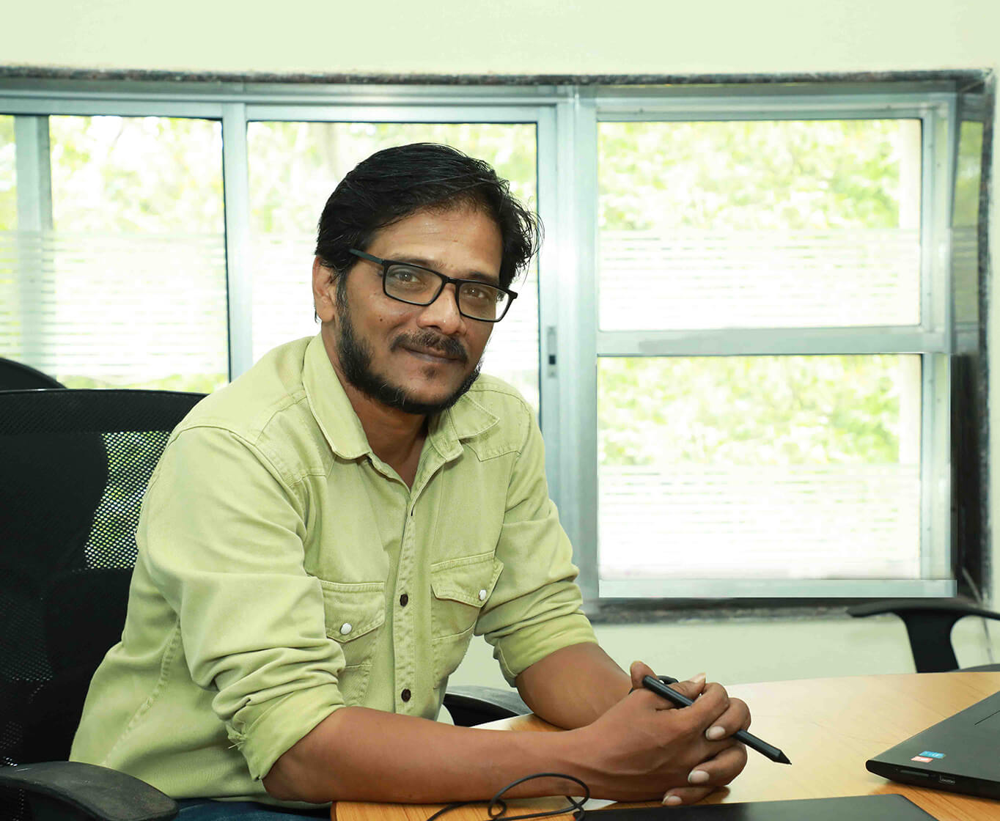
Anil Ramrao Gawai
Project Assistant (Administration)Anil Ramrao Gawai
Project Assistant (Administration) AdministrationAnil is responsible for the day-to-day administration and accounting work, photography, and video shooting for lab sessions, workshops, and other events conducted in WEL and the EE department. Additionally, he assists in preparing financial statements for annual reports and handling general expenditures. Anil received a Bachelor of Commerce degree from Mumbai University.

Mangesh U. Ingle
Project AssistantMangesh U. Ingle
Project Assistant SupportMangesh is a Project Assistant. He is involved in testing teaching lab boards, modules, ICs, electronic components, accessories, and equipment; through-hole soldering, lab equipment testing, and PCB drilling. He has completed a Bachelor of Arts from YCMOU.
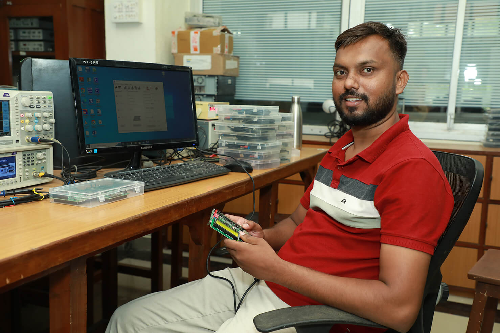
Sunil Sheshrao Raut
Project AttendantSunil Sheshrao Raut
Project Attendant SupportSunil is involved in testing activities such as teaching lab boards, modules, electronic ICs and components; through-hole soldering, lab equipment testing, board accessories testing, and dispatch-related work and follow-up. Sunil is SSC passed from the Maharashtra State Board.
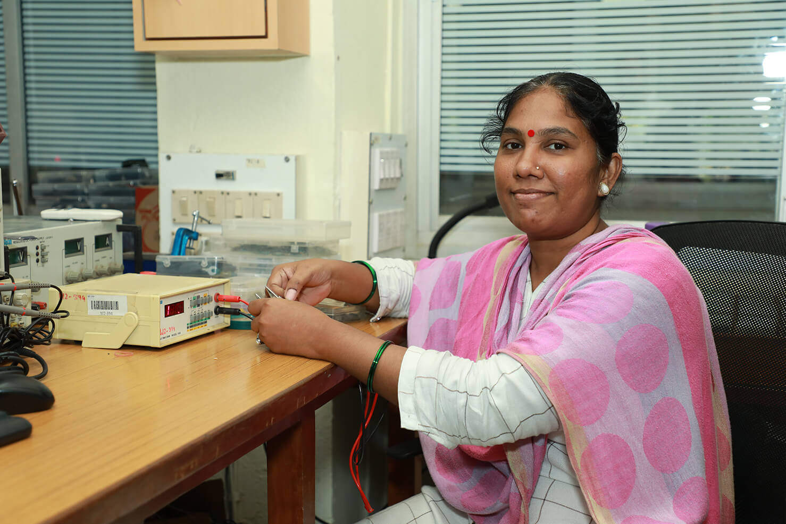
Sandhya Samadhan Birare
Lab AttendantSandhya Samadhan Birare
Lab Attendant SupportSandhya is a Lab Attendant. She is involved in electronic component and IC testing and sorting, equipment probes and accessories testing, inward and outward entries, dispatch work and follow-up with other sections. Sandhya is HSC passed in Arts from the Maharashtra State Board.

Vijay Vilas Patil
Project AssistantVijay Vilas Patil
Project Assistant SupportVijay is a Project Assistant. He is involved in testing and checking of the Krypton board, digital multimeter, arbitrary function generator, and power supply. He has completed his Bachelor of Arts.